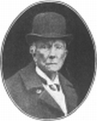
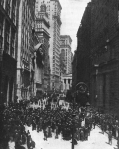

BUSINESS ENTERPRISE AND THE REPUBLICAN PARTY
If a single phrase be chosen to characterize American life during the generation that followed the age of Douglas and Lincoln, it must be "business enterprise"—the tremendous, irresistible energy of a virile people, mounting in numbers toward a hundred million and applied without let or hindrance to the developing of natural resources of unparalleled richness. The chief goal of this effort was high profits for the captains of industry, on the one hand; and high wages for the workers, on the other. Its signs, to use the language of a Republican orator in 1876, were golden harvest fields, whirling spindles, turning wheels, open furnace doors, flaming forges, and chimneys filled with eager fire. The device blazoned on its shield and written over its factory doors was "prosperity." A Republican President was its "advance agent."
Released from the hampering interference of the Southern planters and the confusing issues of the slavery controversy, business enterprise sprang forward to the task of winning the entire country. Then it flung its outposts to the uttermost parts of the earth—Europe, Africa, and the Orient—where were to be found markets for American goods and natural resources for American capital to develop.
Railways and Industry
The Outward Signs of Enterprise. —It is difficult to comprehend all the multitudinous activities of American business energy or to appraise its effects upon the life and destiny of the American people; for beyond the horizon of the twentieth century lie consequences as yet undreamed of in our poor philosophy.
Statisticians attempt to record its achievements in terms of miles of railways built, factories opened, men and women employed, fortunes made, wages paid, cities founded, rivers spanned, boxes, bales, and tons produced. Historians apply standards of comparison with the past. Against the slow and leisurely stagecoach, they set the swift express, rushing from New York to San Francisco in less time than Washington consumed in his triumphal tour from Mt. Vernon to New York for his first inaugural. Against the lazy sailing vessel drifting before a genial breeze, they place the turbine steamer crossing the Atlantic in five days or the still swifter airplane, in fifteen hours. For the old workshop where a master and a dozen workmen and apprentices wrought by hand, they offer the giant factory where ten thousand persons attend the whirling wheels driven by steam. They write of the "romance of invention" and the "captains of industry."
Copyright by Underwood and Underwood, N.Y.
A Corner in the Bethlehem Steel Works
The Service of the Railway. —All this is fitting in its way. Figures and contrasts cannot, however, tell the whole story. Take, for example, the extension of railways. It is easy to relate that there were 30,000 miles in 1860; 166,000 in 1890; and 242,000 in 1910. It is easy to show upon the map how a few straggling lines became a perfect mesh of closely knitted railways; or how, like the tentacles of a great monster, the few roads ending in the Mississippi Valley in 1860 were extended and multiplied until they tapped every wheat field, mine, and forest beyond the valley. All this, eloquent of enterprise as it truly is, does not reveal the significance of railways for American life. It does not indicate how railways made a continental market for American goods; nor how they standardized the whole country, giving to cities on the advancing frontier the leading features of cities in the old East; nor how they carried to the pioneer the comforts of civilization; nor yet how in the West they were the forerunners of civilization, the makers of homesteads, the builders of states.
Government Aid for Railways. —Still the story is not ended. The significant relation between railways and politics must not be overlooked. The bounty of a lavish government, for example, made possible the work of railway promoters. By the year 1872 the Federal government had granted in aid of railways 155,000,000 acres of land—an area estimated as almost equal to Pennsylvania, New York, Connecticut, Rhode Island, Massachusetts, Maine, New Hampshire, and Vermont. The Union Pacific Company alone secured from the federal government a free right of way through the public domain, twenty sections of land with each mile of railway, and a loan up to fifty millions of dollars secured by a second mortgage on the company's property. More than half of the northern tier of states lying against Canada from Lake Michigan to the Pacific was granted to private companies in aid of railways and wagon roads. About half of New Mexico, Arizona, and California was also given outright to railway companies. These vast grants from the federal government were supplemented by gifts from the states in land and by subscriptions amounting to more than two hundred million dollars. The history of these gifts and their relation to the political leaders that engineered them would alone fill a large and interesting volume.
Railway Fortunes and Capital. —Out of this gigantic railway promotion, the first really immense American fortunes were made. Henry Adams, the grandson of John Quincy Adams, related that his grandfather on his mother's side, Peter Brooks, on his death in 1849, left a fortune of two million dollars,
"supposed to be the largest estate in Boston," then one of the few centers of great riches. Compared with the opulence that sprang out of the Union Pacific, the Northern Pacific, the Southern Pacific, with their subsidiary and component lines, the estate of Peter Brooks was a poor man's heritage.
The capital invested in these railways was enormous beyond the imagination of the men of the stagecoach generation. The total debt of the United States incurred in the Revolutionary War—a debt which those of little faith thought the country could never pay—was reckoned at a figure well under $75,000,000. When the Union Pacific Railroad was completed, there were outstanding against it $27,000,000 in first mortgage bonds, $27,000,000 in second mortgage bonds held by the government, $10,000,000 in income bonds, $10,000,000 in land grant bonds, and, on top of that huge bonded indebtedness, $36,000,000 in stock—making $110,000,000 in all. If the amount due the United States government be subtracted, still there remained, in private hands, stocks and bonds exceeding in value the whole national debt of Hamilton's day—a debt that strained all the resources of the Federal government in 1790. Such was the financial significance of the railways.
Railroads of the United States in 1918

Growth and Extension of Industry. —In the field of manufacturing, mining, and metal working, the results of business enterprise far outstripped, if measured in mere dollars, the results of railway construction. By the end of the century there were about ten billion dollars invested in factories alone and five million wage-earners employed in them; while the total value of the output, fourteen billion dollars, was fifteen times the figure for 1860. In the Eastern states industries multiplied. In the Northwest territory, the old home of Jacksonian Democracy, they overtopped agriculture. By the end of the century, Ohio had almost reached and Illinois had surpassed Massachusetts in the annual value of manufacturing output.
That was not all. Untold wealth in the form of natural resources was discovered in the South and West.
Coal deposits were found in the Appalachians stretching from Pennsylvania down to Alabama, in Michigan, in the Mississippi Valley, and in the Western mountains from North Dakota to New Mexico. In nearly every coal-bearing region, iron was also discovered and the great fields of Michigan, Wisconsin, and Minnesota soon rivaled those of the Appalachian area. Copper, lead, gold, and silver in fabulous quantities were unearthed by the restless prospectors who left no plain or mountain fastness unexplored.
Petroleum, first pumped from the wells of Pennsylvania in the summer of 1859, made new fortunes equaling those of trade, railways, and land speculation. It scattered its riches with an especially lavish hand through Oklahoma, Texas, and California.
John D. Rockefeller
The Trust—an Instrument of Industrial Progress. —Business enterprise, under the direction of powerful men working single-handed, or of small groups of men pooling their capital for one or more undertakings, had not advanced far before there appeared upon the scene still mightier leaders of even greater imagination. New constructive genius now brought together and combined under one management hundreds of concerns or thousands of miles of railways, revealing the magic strength of coöperation on a national scale. Price-cutting in oil, threatening ruin to those engaged in the industry, as early as 1879, led a number of companies in Cleveland, Pittsburgh, and Philadelphia to unite in price-fixing. Three years later a group of oil interests formed a close organization, placing all their stocks in the hands of trustees, among whom was John D. Rockefeller. The trustees, in turn, issued certificates representing the share to which each participant was entitled; and took over the management of the entire business. Such was the nature of the "trust," which was to play such an unique rôle in the progress of America.
The idea of combination was applied in time to iron and steel, copper, lead, sugar, cordage, coal, and other commodities, until in each field there loomed a giant trust or corporation, controlling, if not most of the output, at least enough to determine in a large measure the prices charged to consumers. With the passing years, the railways, mills, mines, and other business concerns were transferred from individual owners to corporations. At the end of the nineteenth century, the whole face of American business was changed.
Three-fourths of the output from industries came from factories under corporate management and only one-fourth from individual and partnership undertakings.
The Banking Corporation. —Very closely related to the growth of business enterprise on a large scale was the system of banking. In the old days before banks, a person with savings either employed them in

his own undertakings, lent them to a neighbor, or hid them away where they set no industry in motion.
Even in the early stages of modern business, it was common for a manufacturer to rise from small beginnings by financing extensions out of his own earnings and profits. This state of affairs was profoundly altered by the growth of the huge corporations requiring millions and even billions of capital.
The banks, once an adjunct to business, became the leaders in business.
Copyright by Underwood and Underwood, N.Y.
Wall Street, New York City
It was the banks that undertook to sell the stocks and bonds issued by new corporations and trusts and to supply them with credit to carry on their operations. Indeed, many of the great mergers or combinations in business were initiated by magnates in the banking world with millions and billions under their control.
Through their connections with one another, the banks formed a perfect network of agencies gathering up the pennies and dollars of the masses as well as the thousands of the rich and pouring them all into the channels of business and manufacturing. In this growth of banking on a national scale, it was inevitable that a few great centers, like Wall Street in New York or State Street in Boston, should rise to a position of dominance both in concentrating the savings and profits of the nation and in financing new as well as old corporations.
The Significance of the Corporation. —The corporation, in fact, became the striking feature of American business life, one of the most marvelous institutions of all time, comparable in wealth and power and the number of its servants with kingdoms and states of old. The effect of its rise and growth cannot be summarily estimated; but some special facts are obvious. It made possible gigantic enterprises once entirely beyond the reach of any individual, no matter how rich. It eliminated many of the futile and costly wastes of competition in connection with manufacture, advertising, and selling. It studied the cheapest methods of production and shut down mills that were poorly equipped or disadvantageously located. It established laboratories for research in industry, chemistry, and mechanical inventions. Through the sale of stocks and bonds, it enabled tens of thousands of people to become capitalists, if only in a small way.
The corporation made it possible for one person to own, for instance, a $50 share in a million dollar business concern—a thing entirely impossible under a régime of individual owners and partnerships.
There was, of course, another side to the picture. Many of the corporations sought to become monopolies and to make profits, not by economies and good management, but by extortion from purchasers.
Sometimes they mercilessly crushed small business men, their competitors, bribed members of legislatures
to secure favorable laws, and contributed to the campaign funds of both leading parties. Wherever a trust approached the position of a monopoly, it acquired a dominion over the labor market which enabled it to break even the strongest trade unions. In short, the power of the trust in finance, in manufacturing, in politics, and in the field of labor control can hardly be measured.
The Corporation and Labor. —In the development of the corporation there was to be observed a distinct severing of the old ties between master and workmen, which existed in the days of small industries. For the personal bond between the owner and the employees was substituted a new relation. "In most parts of our country," as President Wilson once said, "men work, not for themselves, not as partners in the old way in which they used to work, but generally as employees—in a higher or lower grade—of great corporations." The owner disappeared from the factory and in his place came the manager, representing the usually invisible stockholders and dependent for his success upon his ability to make profits for the owners. Hence the term "soulless corporation," which was to exert such a deep influence on American thinking about industrial relations.
Cities and Immigration. —Expressed in terms of human life, this era of unprecedented enterprise meant huge industrial cities and an immense labor supply, derived mainly from European immigration. Here, too, figures tell only a part of the story. In Washington's day nine-tenths of the American people were engaged in agriculture and lived in the country; in 1890 more than one-third of the population dwelt in towns of 2500 and over; in 1920 more than half of the population lived in towns of over 2500. In forty years, between 1860 and 1900, Greater New York had grown from 1,174,000 to 3,437,000; San Francisco from 56,000 to 342,000; Chicago from 109,000 to 1,698,000. The miles of city tenements began to rival, in the number of their residents, the farm homesteads of the West. The time so dreaded by Jefferson had arrived.
People were "piled upon one another in great cities" and the republic of small farmers had passed away.
To these industrial centers flowed annually an ever-increasing tide of immigration, reaching the half million point in 1880; rising to three-quarters of a million three years later; and passing the million mark in a single year at the opening of the new century. Immigration was as old as America but new elements now entered the situation. In the first place, there were radical changes in the nationality of the newcomers. The migration from Northern Europe—England, Ireland, Germany, and Scandinavia—diminished; that from Italy, Russia, and Austria-Hungary increased, more than three-fourths of the entire number coming from these three lands between the years 1900 and 1910. These later immigrants were Italians, Poles, Magyars, Czechs, Slovaks, Russians, and Jews, who came from countries far removed from the language and the traditions of England whence came the founders of America.
In the second place, the reception accorded the newcomers differed from that given to the immigrants in the early days. By 1890 all the free land was gone. They could not, therefore, be dispersed widely among the native Americans to assimilate quickly and unconsciously the habits and ideas of American life. On the contrary, they were diverted mainly to the industrial centers. There they crowded—nay, overcrowded—into colonies of their own where they preserved their languages, their newspapers, and their old-world customs and views.
So eager were American business men to get an enormous labor supply that they asked few questions about the effect of this "alien invasion" upon the old America inherited from the fathers. They even stimulated the invasion artificially by importing huge armies of foreigners under contract to work in specified mines and mills. There seemed to be no limit to the factories, forges, refineries, and railways that could be built, to the multitudes that could be employed in conquering a continent. As for the future, that was in the hands of Providence!
Business Theories of Politics. —As the statesmen of Hamilton's school and the planters of Calhoun's had their theories of government and politics, so the leaders in business enterprise had theirs. It was simple and easily stated. "It is the duty of the government," they urged, "to protect American industry against foreign
competition by means of high tariffs on imported goods, to aid railways by generous grants of land, to sell mineral and timber lands at low prices to energetic men ready to develop them, and then to leave the rest to the initiative and drive of individuals and companies." All government interference with the management, prices, rates, charges, and conduct of private business they held to be either wholly pernicious or intolerably impertinent. Judging from their speeches and writings, they conceived the nation as a great collection of individuals, companies, and labor unions all struggling for profits or high wages and held together by a government whose principal duty was to keep the peace among them and protect industry against the foreign manufacturer. Such was the political theory of business during the generation that followed the Civil War.
The Supremacy of the Republican Party (1861-85)
Business Men and Republican Policies. —Most of the leaders in industry gravitated to the Republican ranks. They worked in the North and the Republican party was essentially Northern. It was moreover—at least so far as the majority of its members were concerned—committed to protective tariffs, a sound monetary and banking system, the promotion of railways and industry by land grants, and the development of internal improvements. It was furthermore generous in its immigration policy. It proclaimed America to be an asylum for the oppressed of all countries and flung wide the doors for immigrants eager to fill the factories, man the mines, and settle upon Western lands. In a word the Republicans stood for all those specific measures which favored the enlargement and prosperity of business. At the same time they resisted government interference with private enterprise. They did not regulate railway rates, prosecute trusts for forming combinations, or prevent railway companies from giving lower rates to some shippers than to others. To sum it up, the political theories of the Republican party for three decades after the Civil War were the theories of American business—prosperous and profitable industries for the owners and "the full dinner pail" for the workmen. Naturally a large portion of those who flourished under its policies gave their support to it, voted for its candidates, and subscribed to its campaign funds.
Sources of Republican Strength in the North. —The Republican party was in fact a political organization of singular power. It originated in a wave of moral enthusiasm, having attracted to itself, if not the abolitionists, certainly all those idealists, like James Russell Lowell and George William Curtis, who had opposed slavery when opposition was neither safe nor popular. To moral principles it added practical considerations. Business men had confidence in it. Workingmen, who longed for the independence of the farmer, owed to its indulgent land policy the opportunity of securing free homesteads in the West. The immigrant, landing penniless on these shores, as a result of the same beneficent system, often found himself in a little while with an estate as large as many a baronial domain in the Old World.
Under a Republican administration, the union had been saved. To it the veterans of the war could turn with confidence for those rewards of service which the government could bestow: pensions surpassing in liberality anything that the world had ever seen. Under a Republican administration also the great debt had been created in the defense of the union, and to the Republican party every investor in government bonds could look for the full and honorable discharge of the interest and principal. The spoils system, inaugurated by Jacksonian Democracy, in turn placed all the federal offices in Republican hands, furnishing an army of party workers to be counted on for loyal service in every campaign.
Of all these things Republican leaders made full and vigorous use, sometimes ascribing to the party, in accordance with ancient political usage, merits and achievements not wholly its own. Particularly was this true in the case of saving the union. "When in the economy of Providence, this land was to be purged of human slavery ... the Republican party came into power," ran a declaration in one platform. "The Republican party suppressed a gigantic rebellion, emancipated four million slaves, decreed the equal citizenship of all, and established universal suffrage," ran another. As for the aid rendered by the millions of Northern Democrats who stood by the union and the tens of thousands of them who actually fought in the union army, the Republicans in their zeal were inclined to be oblivious. They repeatedly charged the
Democratic party "with being the same in character and spirit as when it sympathized with treason."
Republican Control of the South. —To the strength enjoyed in the North, the Republicans for a long time added the advantages that came from control over the former Confederate states where the newly enfranchised negroes, under white leadership, gave a grateful support to the party responsible for their freedom. In this branch of politics, motives were so mixed that no historian can hope to appraise them all at their proper values. On the one side of the ledger must be set the vigorous efforts of the honest and sincere friends of the freedmen to win for them complete civil and political equality, wiping out not only slavery but all its badges of misery and servitude. On the same side must be placed the labor of those who had valiantly fought in forum and field to save the union and who regarded continued Republican supremacy after the war as absolutely necessary to prevent the former leaders in secession from coming back to power. At the same time there were undoubtedly some men of the baser sort who looked on politics as a game and who made use of "carpet-bagging" in the South to win the spoils that might result from it. At all events, both by laws and presidential acts, the Republicans for many years kept a keen eye upon the maintenance of their dominion in the South. Their declaration that neither the law nor its administration should admit any discrimination in respect of citizens by reason of race, color, or previous condition of servitude appealed to idealists and brought results in elections. Even South Carolina, where reposed the ashes of John C. Calhoun, went Republican in 1872 by a vote of three to one!
Republican control was made easy by the force bills described in a previous chapter—measures which vested the supervision of elections in federal officers appointed by Republican Presidents. These drastic measures, departing from American tradition, the Republican authors urged, were necessary to safeguard the purity of the ballot, not merely in the South where the timid freedman might readily be frightened from using it; but also in the North, particularly in New York City, where it was claimed that fraud was regularly practiced by Democratic leaders.
The Democrats, on their side, indignantly denied the charges, replying that the force bills were nothing but devices created by the Republicans for the purpose of securing their continued rule through systematic interference with elections. Even the measures of reconstruction were deemed by Democratic leaders as thinly veiled schemes to establish Republican power throughout the country. "Nor is there the slightest doubt," exclaimed Samuel J. Tilden, spokesman of the Democrats in New York and candidate for President in 1876, "that the paramount object and motive of the Republican party is by these means to secure itself against a reaction of opinion adverse to it in our great populous Northern commonwealths....
When the Republican party resolved to establish negro supremacy in the ten states in order to gain to itself the representation of those states in Congress, it had to begin by governing the people of those states by the sword.... The next was the creation of new electoral bodies for those ten states, in which, by exclusions, by disfranchisements and proscriptions, by control over registration, by applying test oaths ...
by intimidation and by every form of influence, three million negroes are made to predominate over four and a half million whites."
The War as a Campaign Issue. —Even the repeal of force bills could not allay the sectional feelings engendered by the war. The Republicans could not forgive the men who had so recently been in arms against the union and insisted on calling them "traitors" and "rebels." The Southerners, smarting under the reconstruction acts, could regard the Republicans only as political oppressors. The passions of the war had been too strong; the distress too deep to be soon forgotten. The generation that went through it all remembered it all. For twenty years, the Republicans, in their speeches and platforms, made "a straight appeal to the patriotism of the Northern voters." They maintained that their party, which had saved the union and emancipated the slaves, was alone worthy of protecting the union and uplifting the freedmen.
Though the Democrats, especially in the North, resented this policy and dubbed it with the expressive but inelegant phrase, "waving the bloody shirt," the Republicans refused to surrender a slogan which made such a ready popular appeal. As late as 1884, a leader expressed the hope that they might "wring one more
President from the bloody shirt." They refused to let the country forget that the Democratic candidate, Grover Cleveland, had escaped military service by hiring a substitute; and they made political capital out of the fact that he had "insulted the veterans of the Grand Army of the Republic" by going fishing on Decoration Day.
Three Republican Presidents. —Fortified by all these elements of strength, the Republicans held the presidency from 1869 to 1885. The three Presidents elected in this period, Grant, Hayes, and Garfield, had certain striking characteristics in common. They were all of origin humble enough to please the most exacting Jacksonian Democrat. They had been generals in the union army. Grant, next to Lincoln, was regarded as the savior of the Constitution. Hayes and Garfield, though lesser lights in the military firmament, had honorable records duly appreciated by veterans of the war, now thoroughly organized into the Grand Army of the Republic. It is true that Grant was not a politician and had never voted the Republican ticket; but this was readily overlooked. Hayes and Garfield on the other hand were loyal party men. The former had served in Congress and for three terms as governor of his state. The latter had long been a member of the House of Representatives and was Senator-elect when he received the nomination for President.
All of them possessed, moreover, another important asset, which was not forgotten by the astute managers who led in selecting candidates. All of them were from Ohio—though Grant had been in Illinois when the summons to military duties came—and Ohio was a strategic state. It lay between the manufacturing East and the agrarian country to the West. Having growing industries and wool to sell it benefited from the protective tariff. Yet being mainly agricultural still, it was not without sympathy for the farmers who showed low tariff or free trade tendencies. Whatever share the East had in shaping laws and framing policies, it was clear that the West was to have the candidates. This division in privileges—not uncommon in political management—was always accompanied by a judicious selection of the candidate for Vice President. With Garfield, for example, was associated a prominent New York politician, Chester A.
Arthur, who, as fate decreed, was destined to more than three years' service as chief magistrate, on the assassination of his superior in office.
The Disputed Election of 1876. —While taking note of the long years of Republican supremacy, it must be recorded that grave doubts exist in the minds of many historians as to whether one of the three Presidents, Hayes, was actually the victor in 1876 or not. His Democratic opponent, Samuel J. Tilden, received a popular plurality of a quarter of a million and had a plausible claim to a majority of the electoral vote. At all events, four states sent in double returns, one set for Tilden and another for Hayes; and a deadlock ensued. Both parties vehemently claimed the election and the passions ran so high that sober men did not shrink from speaking of civil war again. Fortunately, in the end, the counsels of peace prevailed.
Congress provided for an electoral commission of fifteen men to review the contested returns. The Democrats, inspired by Tilden's moderation, accepted the judgment in favor of Hayes even though they were not convinced that he was really entitled to the office.
The Growth of Opposition to Republican Rule
Abuses in American Political Life. —During their long tenure of office, the Republicans could not escape the inevitable consequences of power; that is, evil practices and corrupt conduct on the part of some who found shelter within the party. For that matter neither did the Democrats manage to avoid such difficulties in those states and cities where they had the majority. In New York City, for instance, the local Democratic organization, known as Tammany Hall, passed under the sway of a group of politicians headed by "Boss" Tweed. He plundered the city treasury until public-spirited citizens, supported by Samuel J. Tilden, the Democratic leader of the state, rose in revolt, drove the ringleader from power, and sent him to jail. In Philadelphia, the local Republican bosses were guilty of offenses as odious as those committed by New York politicians. Indeed, the decade that followed the Civil War was marred by so
many scandals in public life that one acute editor was moved to inquire: "Are not all the great communities of the Western World growing more corrupt as they grow in wealth?"
In the sphere of national politics, where the opportunities were greater, betrayals of public trust were even more flagrant. One revelation after another showed officers, high and low, possessed with the spirit of peculation. Members of Congress, it was found, accepted railway stock in exchange for votes in favor of land grants and other concessions to the companies. In the administration as well as the legislature the disease was rife. Revenue officers permitted whisky distillers to evade their taxes and received heavy bribes in return. A probe into the post-office department revealed the malodorous "star route frauds"—the deliberate overpayment of certain mail carriers whose lines were indicated in the official record by asterisks or stars. Even cabinet officers did not escape suspicion, for the trail of the serpent led straight to the door of one of them.
In the lower ranges of official life, the spoils system became more virulent as the number of federal employees increased. The holders of offices and the seekers after them constituted a veritable political army. They crowded into Republican councils, for the Republicans, being in power, could alone dispense federal favors. They filled positions in the party ranging from the lowest township committee to the national convention. They helped to nominate candidates and draft platforms and elbowed to one side the busy citizen, not conversant with party intrigues, who could only give an occasional day to political matters. Even the Civil Service Act of 1883, wrung from a reluctant Congress two years after the assassination of Garfield, made little change for a long time. It took away from the spoilsmen a few thousand government positions, but it formed no check on the practice of rewarding party workers from the public treasury.
On viewing this state of affairs, many a distinguished citizen became profoundly discouraged. James Russell Lowell, for example, thought he saw a steady decline in public morals. In 1865, hearing of Lee's surrender, he had exclaimed: "There is something magnificent in having a country to love!" Ten years later, when asked to write an ode for the centennial at Philadelphia in 1876, he could think only of a biting satire on the nation:
"Show your state
legislatures; show your
Rings;
And challenge Europe to
produce such things
As high officials sitting
half in sight
To share the plunder and
fix things right.
If that don't fetch her,
why, you need only
To show your latest style
in martyrs,—Tweed:
She'll find it hard to hide
her spiteful tears
At such advance in one
poor hundred years."
When his critics condemned him for this "attack upon his native land," Lowell replied in sadness: "These fellows have no notion of what love of country means. It was in my very blood and bones. If I am not an American who ever was?... What fills me with doubt and dismay is the degradation of the moral tone. Is it
or is it not a result of democracy? Is ours a 'government of the people, by the people, for the people,' or a Kakistocracy [a government of the worst], rather for the benefit of knaves at the cost of fools?"
The Reform Movement in Republican Ranks. —The sentiments expressed by Lowell, himself a Republican and for a time American ambassador to England, were shared by many men in his party. Very soon after the close of the Civil War some of them began to protest vigorously against the policies and conduct of their leaders. In 1872, the dissenters, calling themselves Liberal Republicans, broke away altogether, nominated a candidate of their own, Horace Greeley, and put forward a platform indicting the Republican President fiercely enough to please the most uncompromising Democrat. They accused Grant of using "the powers and opportunities of his high office for the promotion of personal ends." They charged him with retaining "notoriously corrupt and unworthy men in places of power and responsibility."
They alleged that the Republican party kept "alive the passions and resentments of the late civil war to use them for their own advantages," and employed the "public service of the government as a machinery of corruption and personal influence."
It was not apparent, however, from the ensuing election that any considerable number of Republicans accepted the views of the Liberals. Greeley, though indorsed by the Democrats, was utterly routed and died of a broken heart. The lesson of his discomfiture seemed to be that independent action was futile. So, at least, it was regarded by most men of the rising generation like Henry Cabot Lodge, of Massachusetts, and Theodore Roosevelt, of New York. Profiting by the experience of Greeley they insisted in season and out that reformers who desired to rid the party of abuses should remain loyal to it and do their work "on the inside."
The Mugwumps and Cleveland Democracy in 1884. —Though aided by Republican dissensions, the Democrats were slow in making headway against the political current. They were deprived of the energetic and capable leadership once afforded by the planters, like Calhoun, Davis, and Toombs; they were saddled by their opponents with responsibility for secession; and they were stripped of the support of the prostrate South. Not until the last Southern state was restored to the union, not until a general amnesty was wrung from Congress, not until white supremacy was established at the polls, and the last federal soldier withdrawn from Southern capitals did they succeed in capturing the presidency.
The opportune moment for them came in 1884 when a number of circumstances favored their aspirations.
The Republicans, leaving the Ohio Valley in their search for a candidate, nominated James G. Blaine of Maine, a vigorous and popular leader but a man under fire from the reformers in his own party. The Democrats on their side were able to find at this juncture an able candidate who had no political enemies in the sphere of national politics, Grover Cleveland, then governor of New York and widely celebrated as a man of "sterling honesty." At the same time a number of dissatisfied Republicans openly espoused the Democratic cause,—among them Carl Schurz, George William Curtis, Henry Ward Beecher, and William Everett, men of fine ideals and undoubted integrity. Though the "regular" Republicans called them
"Mugwumps" and laughed at them as the "men milliners, the dilettanti, and carpet knights of politics,"
they had a following that was not to be despised.
The campaign which took place that year was one of the most savage in American history. Issues were thrust into the background. The tariff, though mentioned, was not taken seriously. Abuse of the opposition was the favorite resource of party orators. The Democrats insisted that "the Republican party so far as principle is concerned is a reminiscence. In practice it is an organization for enriching those who control its machinery." For the Republican candidate, Blaine, they could hardly find words to express their contempt. The Republicans retaliated in kind. They praised their own good works, as of old, in saving the union, and denounced the "fraud and violence practiced by the Democracy in the Southern states." Seeing little objectionable in the public record of Cleveland as mayor of Buffalo and governor of New York, they attacked his personal character. Perhaps never in the history of political campaigns did the discussions on the platform and in the press sink to so low a level. Decent people were sickened. Even hot partisans
shrank from their own words when, after the election, they had time to reflect on their heedless passions.
Moreover, nothing was decided by the balloting. Cleveland was elected, but his victory was a narrow one.
A change of a few hundred votes in New York would have sent his opponent to the White House instead.
Changing Political Fortunes (1888-96). —After the Democrats had settled down to the enjoyment of their hard-earned victory, President Cleveland in his message of 1887 attacked the tariff as "vicious, inequitable, and illogical"; as a system of taxation that laid a burden upon "every consumer in the land for the benefit of our manufacturers." Business enterprise was thoroughly alarmed. The Republicans characterized the tariff message as a free-trade assault upon the industries of the country. Mainly on that issue they elected in 1888 Benjamin Harrison of Indiana, a shrewd lawyer, a reticent politician, a descendant of the hero of Tippecanoe, and a son of the old Northwest. Accepting the outcome of the election as a vindication of their principles, the Republicans, under the leadership of William McKinley in the House of Representatives, enacted in 1890 a tariff law imposing the highest duties yet laid in our history. To their utter surprise, however, they were instantly informed by the country that their program was not approved. That very autumn they lost in the congressional elections, and two years later they were decisively beaten in the presidential campaign, Cleveland once more leading his party to victory.
References
L.H. Haney, Congressional History of Railways (2 vols.).
J.P. Davis, Union Pacific Railway.
J.M. Swank, History of the Manufacture of Iron.
M.T. Copeland, The Cotton Manufacturing Industry in the United States (Harvard Studies).
E.W. Bryce, Progress of Invention in the Nineteenth Century.
Ida Tarbell, History of the Standard Oil Company (Critical).
G.H. Montague, Rise and Progress of the Standard Oil Company (Friendly).
H.P. Fairchild, Immigration, and F.J. Warne, The Immigrant Invasion (Both works favor exclusion).
I.A. Hourwich, Immigration (Against exclusionist policies).
J.F. Rhodes, History of the United States, 1877-1896, Vol. VIII.
Edward Stanwood, A History of the Presidency, Vol. I, for the presidential elections of the period.
Questions
1. Contrast the state of industry and commerce at the close of the Civil War with its condition at the close of the Revolutionary War.
2. Enumerate the services rendered to the nation by the railways.
3. Explain the peculiar relation of railways to government.
4. What sections of the country have been industrialized?
5. How do you account for the rise and growth of the trusts? Explain some of the economic advantages of the trust.
6. Are the people in cities more or less independent than the farmers? What was Jefferson's view?
7. State some of the problems raised by unrestricted immigration.
8. What was the theory of the relation of government to business in this period? Has it changed in recent times?
9. State the leading economic policies sponsored by the Republican party.
10. Why were the Republicans especially strong immediately after the Civil War?
11. What illustrations can you give showing the influence of war in American political campaigns?
12. Account for the strength of middle-western candidates.
13. Enumerate some of the abuses that appeared in American political life after 1865.
14. Sketch the rise and growth of the reform movement.
15. How is the fluctuating state of public opinion reflected in the elections from 1880 to 1896?
Research Topics
Invention, Discovery, and Transportation. —Sparks, National Development (American Nation Series), pp. 37-67; Bogart, Economic History of the United States, Chaps. XXI, XXII, and XXIII.
Business and Politics. —Paxson, The New Nation (Riverside Series), pp. 92-107; Rhodes, History of the United States, Vol. VII, pp. 1-29, 64-73, 175-206; Wilson, History of the American People, Vol. IV, pp.
78-96.
Immigration. —Coman, Industrial History of the United States (2d ed.), pp. 369-374; E.L. Bogart, Economic History of the United States, pp. 420-422, 434-437; Jenks and Lauck, Immigration Problems, Commons, Races and Immigrants.
The Disputed Election of 1876. —Haworth, The United States in Our Own Time, pp. 82-94; Dunning, Reconstruction, Political and Economic (American Nation Series), pp. 294-341; Elson, History of the United States, pp. 835-841.
Abuses in Political Life. —Dunning, Reconstruction, pp. 281-293; see criticisms in party platforms in Stanwood, History of the Presidency, Vol. I; Bryce, American Commonwealth (1910 ed.), Vol. II, pp. 379-448; 136-167.
Studies of Presidential Administrations. —( a) Grant, ( b) Hayes, ( c) Garfield-Arthur, ( d) Cleveland, and ( e) Harrison, in Haworth, The United States in Our Own Time, or in Paxson, The New Nation (Riverside Series), or still more briefly in Elson.
Cleveland Democracy. —Haworth, The United States, pp. 164-183; Rhodes, History of the United States, Vol. VIII, pp. 240-327; Elson, pp. 857-887.
Analysis of Modern Immigration Problems. — Syllabus in History (New York State, 1919), pp. 110-112.
{kind=link}